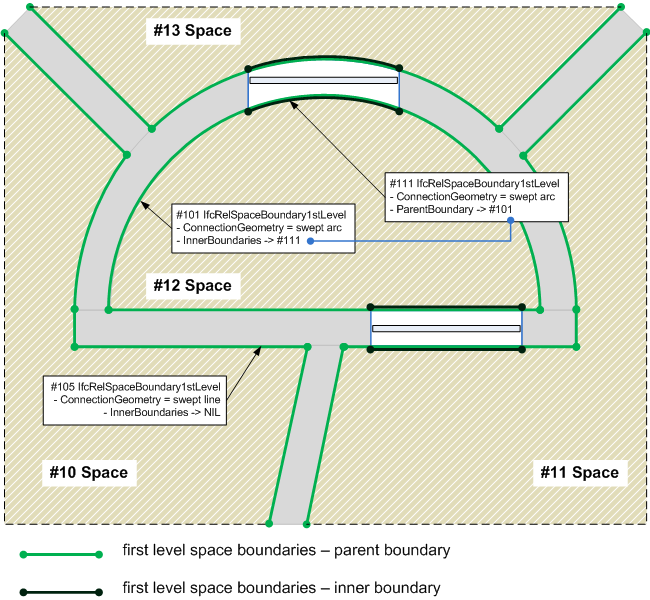

5.4.3.41 IfcRelSpaceBoundary1stLevel
| Limites d'espace de premier niveau |
| Raumgrenzen 1. Ebene - Relation |
The 1st level space boundary
defines the physical or virtual delimiter of a space by the
relationship IfcRelSpaceBoundary1stLevel to the
surrounding elements. 1st level space boundaries are
characterizeda by:
- 1st level space boundaries are the boundaries of a space
defined by the surfaces of building elements bounding this space
(physical space boundaries) or by virtual surfaces provided by an
adjacent space with no dividing wall.
- 1st level space boundaries do not consider any change of
material in the bounding building elements, or different
spaces/zones behind a wall or slab (floor or ceiling).
- 1st level space boundaries are differentiated in two ways:
virtual or physical and internal,external, or undefined (internal
and external) e.g. for a wall that is partially inside and
outside.
- 1st level space boundaries form a closed shell around the
space (so long as the space is completely enclosed) and include
overlapping boundaries representing openings (filled or not) in
the building elements (see implementers agreement below).
1st level space boundaries define a space by its boundary
surfaces without taking anything on the other side of the
bounding elements into account.
NOTE 1st level space boundaries are used e.g.
in quantity take-off and facility management as they describe the
surfaces for finishes. They cannot be directly used for thermal
analysis. However 1st level space boundaries can provide the
input to preprocessors to thermal analysis software that take 1st
level space boundaries and perform the necessary transformation
into 2nd level space boundaries that are required for energy
analysis.
HISTORY New entity in IFC4.
Relationship Use Definitions
As shown in Figure 139, the attribute ParentBoundary with inverse InnerBoundaries is provided to link the space boundaries of doors, windows, and openings to the parent boundary, such as of a wall or slab.
NOTE The space boundary of the parent is not cut by the inner boundary - both overlap.
 |
Figure 139 — Space boundary first level relationships |
Geometry Use Definitions
See the definition at the supertype IfcRelSpaceBoundary for
guidance on using the connection geometry for first level space
boundaries.
XSD Specification:
<xs:element name="IfcRelSpaceBoundary1stLevel" type="ifc:IfcRelSpaceBoundary1stLevel" substitutionGroup="ifc:IfcRelSpaceBoundary" nillable="true"/>
<xs:complexType name="IfcRelSpaceBoundary1stLevel">
<xs:complexContent>
<xs:extension base="ifc:IfcRelSpaceBoundary">
<xs:sequence>
<xs:element name="ParentBoundary" type="ifc:IfcRelSpaceBoundary1stLevel" nillable="true" minOccurs="0"/>
</xs:sequence>
</xs:extension>
</xs:complexContent>
</xs:complexType>
EXPRESS Specification:
|
ENTITY IfcRelSpaceBoundary1stLevel
|
 EXPRESS-G diagram
EXPRESS-G diagram
Attribute Definitions:
| ParentBoundary | : |
Reference to the host, or parent, space boundary within which this inner boundary is defined.
|
| InnerBoundaries | : |
Reference to the inner boundaries of the space boundary. Inner boundaries are defined by the space boundaries of openings, doors and windows.
|
Inheritance Graph:
|
ENTITY IfcRelSpaceBoundary1stLevel
|
 Link to this page
Link to this page